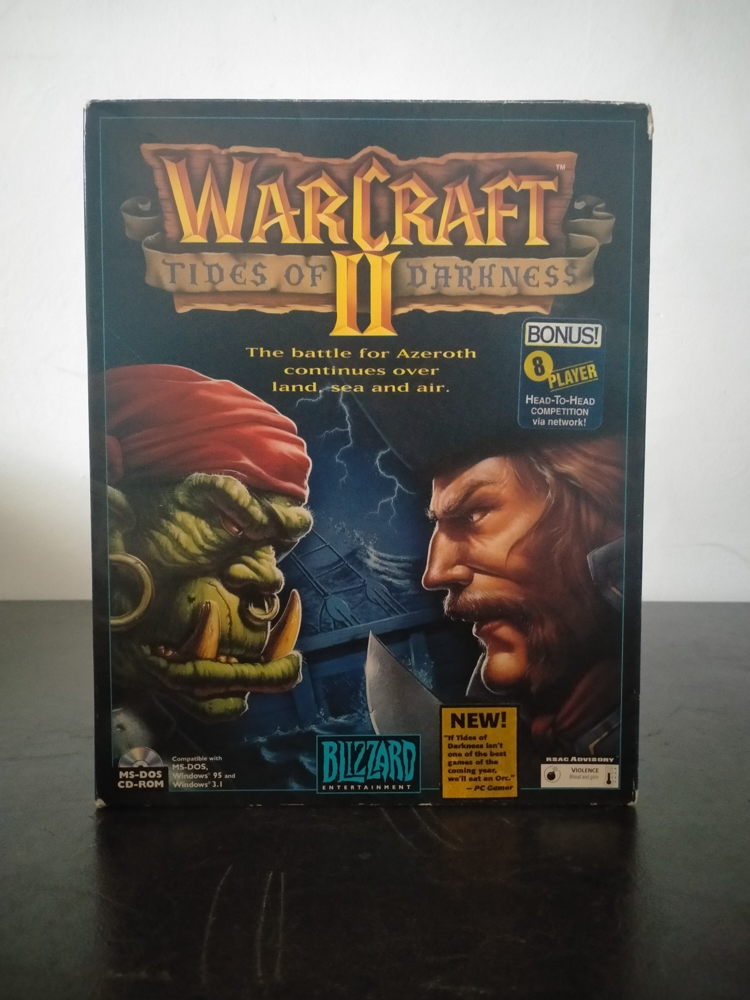

Ficha #000140
Warcraft II: Tides of Darkness
Warcraft II: Tides of Darkness es un juego de estrategia en tiempo real desarrollado y publicado por Blizzard Entertainment en 1995. Continúa la guerra entre humanos y orcos iniciada en Warcraft: Orcs & Humans, ampliando considerablemente su fórmula mediante dos campañas diferenciadas, construcción de bases, extracción de oro y madera, desarrollo tecnológico y combates combinados por tierra, mar y aire. Incorporó unidades navales, criaturas voladoras, niebla de guerra y un sistema de control más refinado que contribuyó a establecer numerosas convenciones del RTS moderno. Su apartado audiovisual, con gráficos SVGA, voces digitalizadas y una reconocible banda sonora orquestal reproducida desde el CD-ROM, ayudó a consolidar el estilo narrativo y artístico de Blizzard. Esta edición norteamericana en inglés pertenece a una tirada compatible con MS-DOS, Windows 3.1 y Windows 95, promocionada por sus modalidades multijugador mediante red, módem y conexión directa, así como por la tecnología de instalación múltiple denominada spawning. Warcraft II fue decisivo para la expansión comercial de Blizzard y para la consolidación de Azeroth como uno de los universos de fantasía más relevantes del videojuego para PC.
- Formato
- Big Box
- Plataforma
- MsDos Win3.x Win95
- Género
- Estrategia en tiempo real RTS Fantasía Estrategia militar Gestión de recursos
- Serie
- Todos Big Box
- Desarrollador
- Blizzard Entertainment
- Distribuidor
- Blizzard Entertainment
- EAN
- —
Contenido de la edición
- Caja exterior Big Box
- CD-ROM en caja jewel case
- Manual de instrucciones
- Folleto promocional de Blizzard Entertainment
- Documentación técnica
- Tarjeta de registro o pedido
Preservación
- Protección
- No determinado
- Formato recomendado
- BIN/CUE
- Jugable en virtualización
- Sí
Se recomienda crear una imagen BIN/CUE del CD-ROM para conservar tanto la pista de datos como las posibles pistas de audio reproducidas durante el juego. Deben digitalizarse también el manual y la documentación de la edición. La ejecución es viable mediante DOSBox para la versión MS-DOS o mediante una máquina virtual con Windows 3.x o Windows 95.